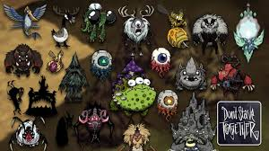
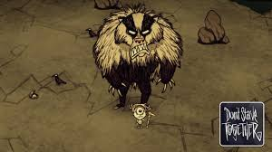
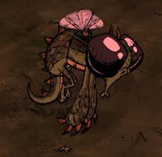
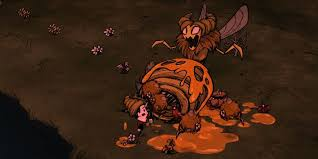
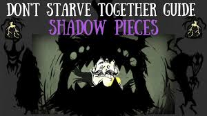
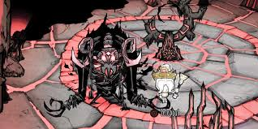
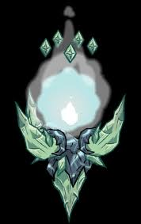

In the deadly world of *Don’t Starve Together*, bosses are colossal, nightmarish creatures that test the skill, strategy, and teamwork of players. These titanic foes are not only obstacles to survival but also key to unlocking rare resources and advancing in the game. From the cold-hearted Deerclops to the all-powerful Ancient Fuelweaver, each boss brings unique challenges that demand preparation and cunning to overcome.

Notable Bosses
Deerclops

The Deerclops is a massive, one-eyed beast that appears in winter. Known for its devastating ground pound and icy breath, this boss will destroy structures and freeze survivors in their tracks. Players must prepare for its arrival by building warm shelters and crafting powerful weapons.
Bearger

A harbinger of autumn, the Bearger is a colossal bear-like creature with a voracious appetite. While it can wreak havoc on your base, its tendency to devour everything in sight can be used strategically to clear unwanted resources.
Dragonfly

A fiery guardian of lava pools, the Dragonfly is one of the most challenging bosses. With its powerful fire attacks and the ability to spawn lavae minions, players must be well-prepared with fireproof gear and coordinated strategies.
Bee Queen

The Bee Queen is a giant insect that guards the hive with relentless swarms of bees. Known for her overwhelming numbers, players need armor, crowd control weapons, and strategic positioning to stand a chance.
Shadow pieces

You can summon the Shadow pieces by finding their three pieces scattered around the world. Once you unite the pieces, you need to wait for the new moon and mine the statues. Once killed, you will gain the atrium heart which is required to start the ancient fuelweaver fight.
Ancient Fuelweaver

The Ancient Fuelweaver is the ultimate boss of *Don’t Starve Together*. Found in the ruins, this skeletal monstrosity uses shadow powers and summons to overwhelm survivors. Defeating it requires extensive preparation and mastery of the game's mechanics as it is considered the final boss of the game.
Celestial Champion

It is spawned from a meteor that crashes down after the player finishes assembling the Lunar Siphonator built over the Mysterious Energy summoned from having all three Lunar Altars completed near each other on the Lunar Island. Celestial Champion is considered the last two true bosses in the game along side Ancient Fuelweaver